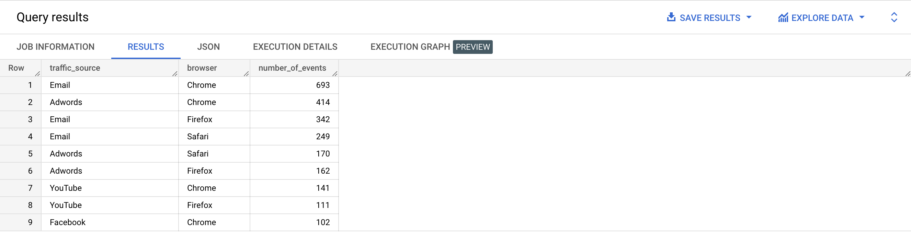

In order to filter the results returned by a SELECT clause, we’ve already seen how to use WHERE. But what if we need to filter the results of a GROUP BY? We can’t use WHERE there because the WHERE step happens before GROUP BY, and can’t filter the aggregated data.
To filter data aggregated with a GROUP BY, we’ll use a new clause: HAVING.
Here is a partial view of the logical order in which the database engine evaluates the components of our SELECT queries.
| Step | Clause | Description |
|---|---|---|
| 1 | FROM | Chooses the data to get the data from. |
| 2 | WHERE | Filters the data. |
| 3 | GROUP BY | Aggregates the data. |
| 4 | HAVING | Filters the aggregated data. |
| 5 | SELECT | Returns the final data. |
| 6 | ORDER BY | Sorts the final data. |
| 7 | LIMIT | Limits the number of rows displayed. |
Note that this is a conceptual, logical view of the process. In practice, the database engine will optimize the way it processes the query depending on various factors. In BigQuery, we should always refer to the official Google Standard SQL documentation on alias visibility rules. Please read them. 😉
HAVING is used in the same way as WHERE, but comes after GROUP BY.
Type the query below in the BigQuery console and run it. Don't copy paste. 😉
SELECT country,
AVG(age) AS users_average_age
FROM bigquery-public-data.thelook_ecommerce.users
GROUP BY country
HAVING users_average_age >= 42;
Example results:
{% include practice_problems_intructions.html %}bigquery-public-data.thelook_ecommerce.orders
Write a query that will display the users that have made more than 2 orders.
SELECT user_id,
COUNT(order_id) AS number_of_orders
FROM bigquery-public-data.thelook_ecommerce.orders
GROUP BY user_id
HAVING number_of_orders > 2
ORDER BY number_of_orders ASC;
bigquery-public-data.thelook_ecommerce.events
Write a query that will:

SELECT traffic_source,
browser,
COUNT(*) AS number_of_events
FROM bigquery-public-data.thelook_ecommerce.events
WHERE state = 'New York'
AND created_at BETWEEN '2022-01-01 00:00:00 UTC' AND '2022-03-31 23:59:59 UTC'
GROUP BY traffic_source,
browser
HAVING number_of_events >= 100
ORDER BY number_of_events DESC;